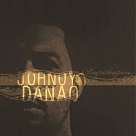

Honestly, this is the part of this website that I really experienced hardtime haha.
Sobrang nahirapan akong maghanap ng litrato nating dalawa nang magkasama. Alam mo
naman, may pagkamahiyain ako sa camera. But I really love staring at these small amount
pictures of us.
Music That Reminds Me Of You
Your Universe

Ikaw at Ako
Bawat Piyesa
Sabi nga nila, "Music has the power to awaken intense feelings and memories, especially when it’s linked to someone we truly care about."
Siguro kung mayroon mang mga kantang sa tuwing naririnig ng aking mga tenga at agarang makakaalala sa iyo, itong mga ito iyon.
Your Universe — deep admiration, gratitude, and love for a partner who brings immense comfort, peace, and joy. That is the meaning of the song.
If there's a song that can describe how much comfort you are giving to me, I would definitely say it's Your Universe. Sabi nga sa kantang ito "You can thank your stars all you want
but I'll always be the lucky one". And that's what I am really grateful about, even thougth marami akong pagkukulang, hindi mo hinahanap sa iba, that's what makes me the lucky one.
Ikaw at Ako — Johnoy Danao's "Ikaw at Ako" is a soulful ballad about two people brought together by destiny to navigate life's highs and lows as a single unit. It emphasizes a selfless
commitment to remain faithful and supportive, grounded in a humble promise to seek forgiveness whenever hardships arise. Kung tatanungin ako kung anong kanta ang gusto ko sa aking kasal, ito ay Ikaw at Ako ni Johnoy Danao.
I would do anything just to end up marrying you one day.
Bawat Piyesa — "Bawat Piyesa," famously performed by Munimuni, translates to "Every Piece" or "Each Part" and is a song exploring deep love, vulnerability, and the fear of loss. It expresses a desire to cherish every
detail of a loved one, holding on tightly to them, and finding comfort in their presence. Kung mayroong linyang tumatak sa akin sa kantang ito, ito ay "Huwag kang bibitaw, huwag kang mawawala". A fear of loss, siguro kung mawala ka,
parang nawala na rin ako.
Letter
Verification
Direction: Before you can proceed to the letter I prepared, kindly type the exact date, month, and the year when we first talked. (month/day/year).
Note: Once you entered the correct combinations, you will be automatically proceed to the letter.